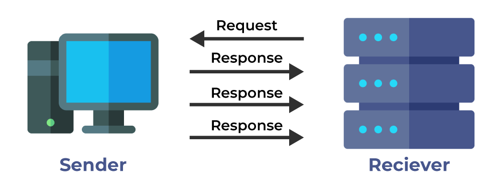

TCP vs UDP
Confronto tra i due principali protocolli di trasporto nella rete.

Schema della trasmissione affidabile con TCP.
TCP (Transmission Control Protocol)
TCP è un protocollo orientato alla connessione che garantisce una trasmissione affidabile dei dati. Ideale per applicazioni in cui è fondamentale che i dati arrivino in ordine e senza perdite.
- Connessione affidabile: Stabilisce una connessione tra mittente e destinatario prima di inviare dati.
- Controllo di flusso: Regola la velocità di trasmissione per evitare congestioni.
- Rilevazione e correzione degli errori: I pacchetti persi vengono ritrasmessi.
- Utilizzo: Navigazione web, email, trasferimento file (HTTP, FTP, SMTP).
UDP (User Datagram Protocol)
UDP è un protocollo senza connessione, progettato per essere rapido e leggero. È ideale per applicazioni in cui la velocità è più importante dell'affidabilità.
- Trasmissione senza connessione: I pacchetti vengono inviati senza instaurare una connessione.
- Bassa latenza: Nessun controllo di flusso o ritrasmissione, riducendo i tempi di trasmissione.
- Non affidabile: I pacchetti persi non vengono ritrasmessi.
- Utilizzo: Streaming video/audio, gaming online, DNS.

Schema della trasmissione veloce e leggera con UDP.